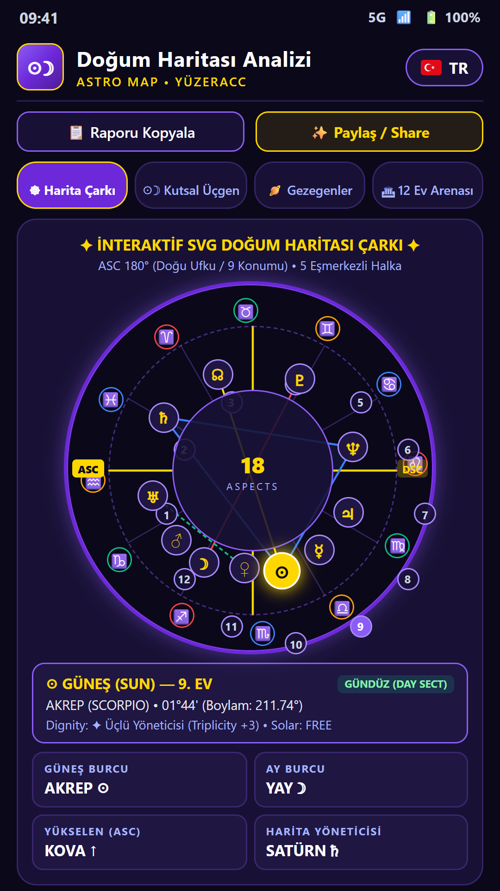
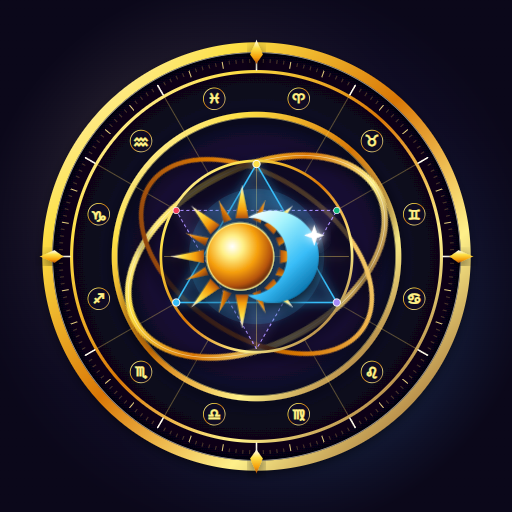
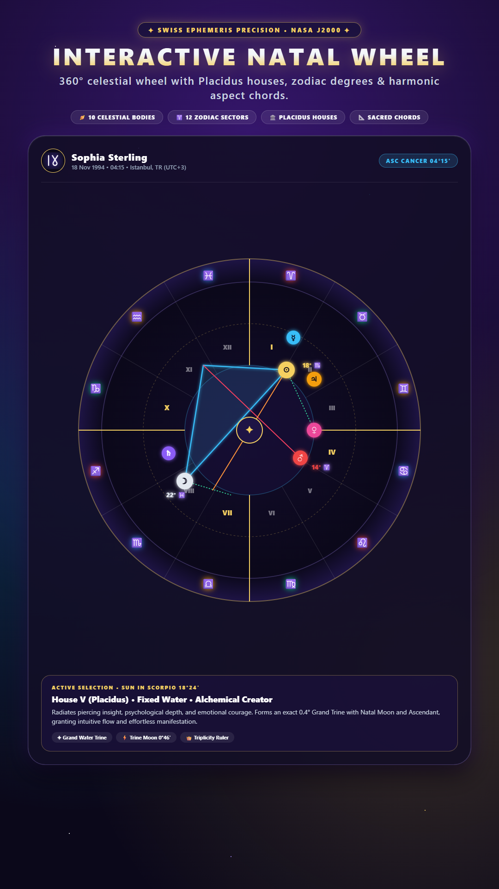
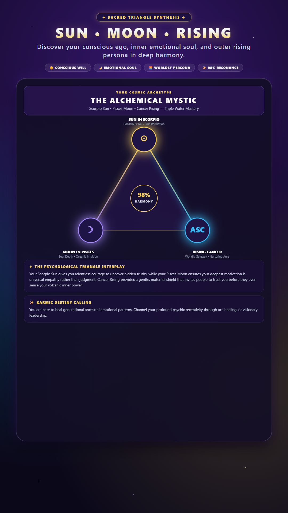
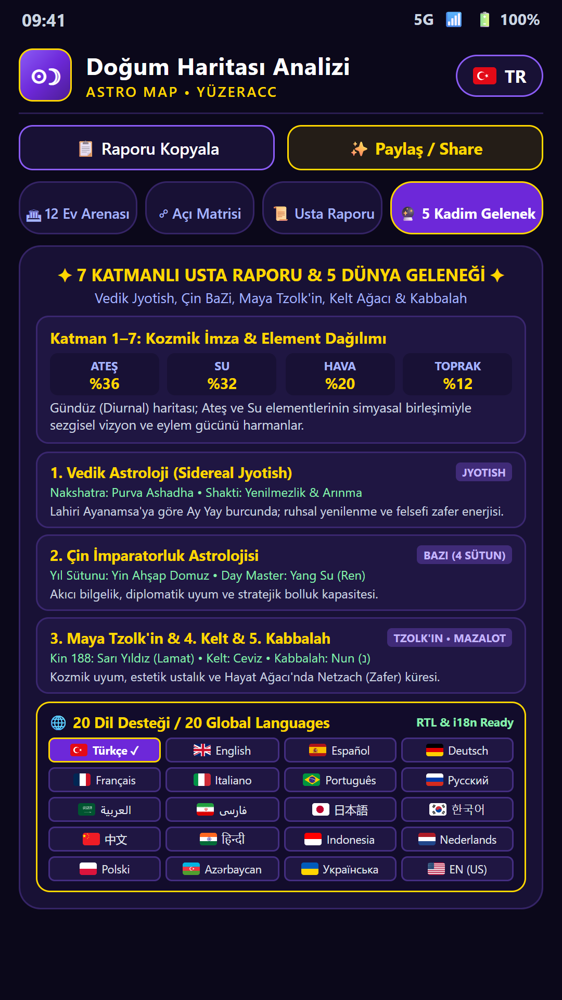

360° İnteraktif Natal Çark
Placidus ev başlangıçları, 10 gezegen, Kiron, Lilith, Kuzey/Güney Ay Düğümleri, Şans Noktası ve açı çizgilerini tek dokunuşla keşfet.


İnternet bağlantısına ihtiyaç duymayan %100 çevrimdışı astronomik efemeris motoruyla Güneş, Ay, Yükselen, 10 gezegen, 12 Placidus evi, Kiron, Lilith ve Ay Düğümlerini saniyenin altında hesapla.

Placidus ev başlangıçları, 10 gezegen, Kiron, Lilith, Kuzey/Güney Ay Düğümleri, Şans Noktası ve açı çizgilerini tek dokunuşla keşfet.

Güneş, Ay ve Yükselen burcunun oluşturduğu Kutsal Üçlüyü, 4 elementi, nitelik dengesini ve 12 yaşam evinin yöneticilerini incele.

Batı Psikolojik, Helenistik, Vedik (Jyotish), Çin / Doğu ve Karmik Arketip geleneklerini harmanlayan 7 katmanlı baş astrolog raporu.

Doğum Haritası: Astroloji (com.yuzeracc.dogumharitasiapp) hesap istemez ve doğum bilgilerini hiçbir sunucuya göndermez. Tüm hesaplamalar %100 cihaz içinde yapılır.